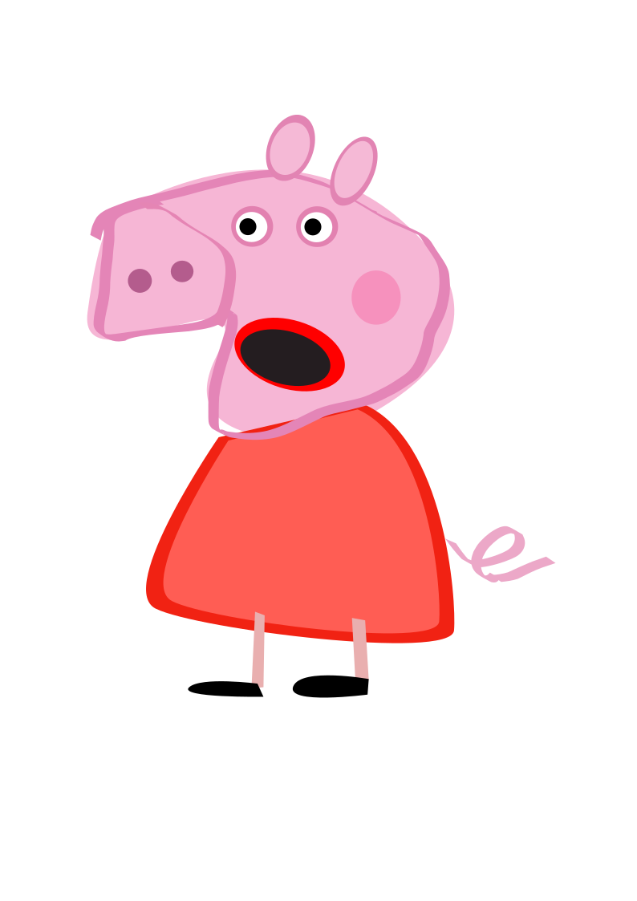
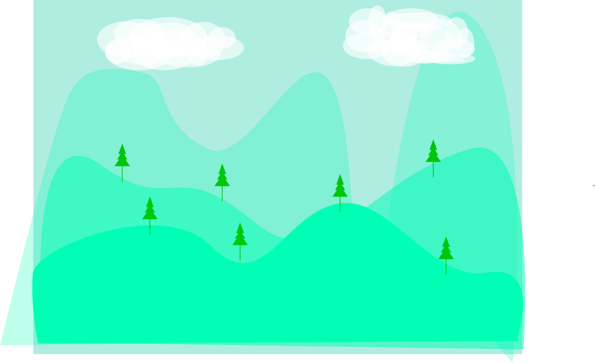
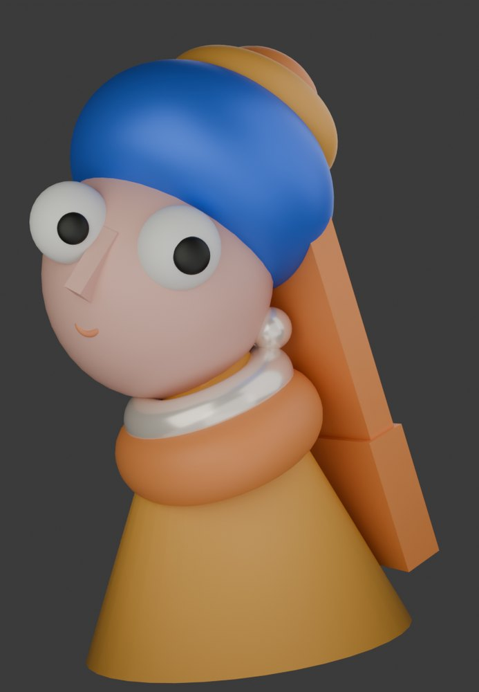
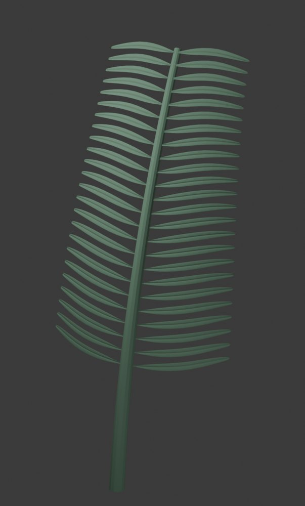
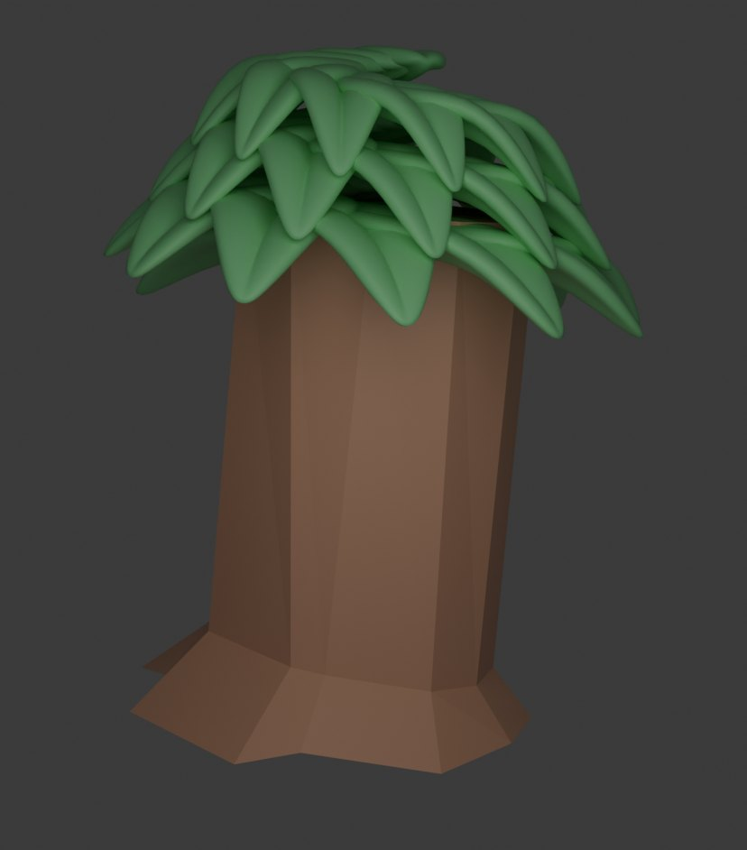

Renzo's Creative Tech Studio
A collection of edited images, Blender models, and a seed-to-sprout animation, presented as a growing digital world.
03
Image Edits
03
Blender Models
01
Growth Animation
Topic 01
Image Editing


Topic 02
Blender 3D Modelling
These are 3D models I created in Blender. I focused on simple shapes, clean colours, lighting, and making each object look clear in the final render.



Animation Study
Seed to Sprout
This animation connects the leaf and tree models through a short growth story, moving from a small seed toward a finished plant.
Seed
Light
Sprout
Seed to Sprout Animation